Contents
To activate navigation features of PDF, two key commands:
- \setupinteraction to enable clickable links and bookmarks (other options available)
- \placebookmarks to provides bookmarks to the PDF viewer (in the PDF viewer's navigation panel, you can navigate through the various sections like a clickable table of contents). You have to provide the list of the sectionning levels you want to include into the PDF, add optional second list defining the one you want to see unfolded when the PDF is open.
Will do the same but open only chapter ones by default:
-
\setuppapersize[A8,landscape] \setupinteraction[state=start] \setupbodyfont[pagella,8pt] \placebookmarks % HERE [section,subsection] [section] \starttext \startsection[title={The section}] \startsubsection[title={The sub section}] \startsubsubsection[title={The sub subsection}] \stopsubsubsection Nothing to see here but compile this example with your \ConTeXt\ installation and open the resulting PDF file. \stopsubsection \stopsection \stoptext
- 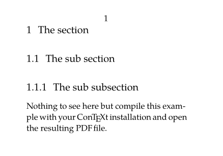
Reference
Within the document
Many element have a reference option like \startsection. \placefigure and \placetable directly require a reference as argument.
Then you can use:
- \in for referencing by the number,
- \at for referencing by the pagenumber,
- \about for referencing by the text.
-
\definepapersize[sheet][width=104mm,height=74mm] \setuppapersize[A8][sheet] \setuppaper[nx=2,ny=1] \setuparranging[XY] \showframe[edge] \setupbodyfont[pagella,8pt] \setupinteraction[state=start] \setupfootertexts [pagenumber] \starttext \startsection [title={Hello}, reference={sec:hello}] Section Hello refers to \in{section}[sec:world] on \at{page}[sec:world]. It's title is \about[sec:world]. \stopsection \page \startsection [title={World!!!!}, reference={sec:world}] Section World refers to \in{section}[sec:hello] on \at{page}[sec:hello]. \stopsection \stoptext
- 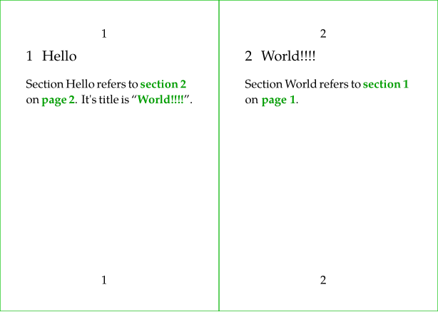
You can also define a reference anywhere you like with \reference[reflabel]{text}.
-
\definepapersize[sheet][width=104mm,height=74mm] \setuppapersize[A8][sheet] \setuppaper[nx=2,ny=1] \setuparranging[XY] \showframe[edge] \setupbodyfont[pagella,8pt] \setupinteraction[state=start] \setupfootertexts [pagenumber] \starttext \startsection [title={Hello}, reference={sec:hello}] I can bring here the \in[myref] defined \at{page}[myref] \stopsection \page \startsection [title={World!!!!}, reference={sec:world}] This is the \reference[myref]{\color[blue]{text coming from the ref}} text of my reference. \stopsection \stoptext
-

To URL (web adress)
Hyperlinks can be defined with \goto{the text} [url(the url.org)]. The url should be specified within url(…). Without it, \goto can be used to refer to internal references.
-
\setuppapersize[A8] \setupbodyfont[pagella,8pt] \setupinteraction[state=start] \starttext \startsection [title={Section Hello}, reference={sec:hello}] Please see \startitemize \item \goto{Wiki} [url(http://wiki.contextgarden.net)] \item \goto{Email} [url(mailto:spam@example.com)] \stopitemize \stopsection \startsection [title={Section World}, reference={sec:world}] Please see \startitemize \item \goto{previous section}[sec:hello] \stopitemize \stopsection \stoptext
- 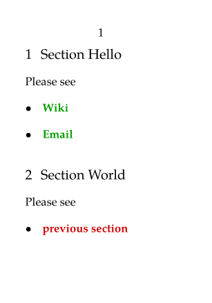
Usually, one uses the same url reference several times. One can define it once with \useurl [arg1] [arg2] [arg3] [arg4] (in the setup area for example) and uses it several times with \goto or \from or Template:url
- \useurl [the label] [the url part one] [the url part two if needed] [the text]
- \goto will return a link with the text provide to it
- \from will return a link with the text to be
to be displayed as a hypertext link as provided as 4th argument of \useurl
- \url will return a link with the url as text.
-
\setuppapersize[A7,landscape] \setupbodyfont[pagella,8pt] \setupinteraction[state=start] \useurl [ConTeXtWiki] [https://wiki.contextgarden.net] [][le wiki de \ConTeXt] \starttext \startitemize [packed] \startitem \tex{goto}~: \goto {Wiki de \ConTeXt} [url(ConTeXtWiki)] \stopitem \startitem \tex{from}~: \from [ConTeXtWiki] \stopitem \startitem \tex{url}~: \url [ConTeXtWiki] \stopitem \stopitemize \stoptext
- 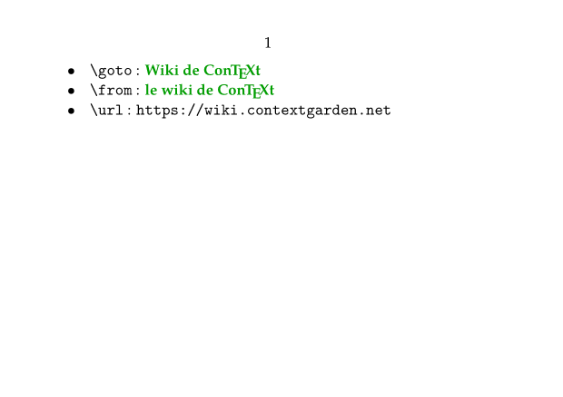
Citation and bibliography
Four commands are key
-
\usebtxdataset
to load the bibliography source file,
- Bibliographic references can be stored in a BibTeX file for example (but other formats are allowed), which must be specified as an option to the \usebtxdataset [thebibfile.bib] command.
- For demo on this wiki we will use a buffer as bibliography source.
- \usebtxdefinitions to load the citation and referencing style,
- \cite to insert a reference, and selecting specific fields when required,
-
\placelistofpublications
to insert the list of the bibliographical references,
- the citations will be properly typeset only if \placelistofpublications is placed somewhere in the document
-
\setuppapersize[A7,landscape] \setupinteraction[state=start] \startbuffer[biblio] @Book{2024MathManual, title = {Mathematics in \ConTeXt}, author = {Hagen, Hans and Sundqvist,Mikael P.}, edition = {1}, year = {2024}, publisher = {pragma-ade, NL}, url = {http://www.pragma-ade.nl/general/manuals/mathincontext-paper.pdf}, } \stopbuffer \usebtxdataset [biblio.buffer] \usebtxdefinitions [apa] % style \starttext Have a look to \cite[2024MathManual], entitled \cite [title] [2024MathManual] and from \cite [author] [2024MathManual], issued in \cite [year] [2024MathManual]. \startsection[title=Bibliography] \placelistofpublications \stopsection \stoptext
- 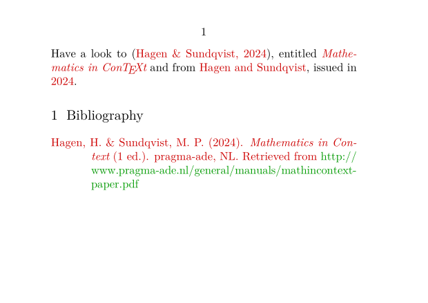
Index and register
Words to use as entry of the index are defined with \index and the index itself is inserted with \placeindex. As you see, the text used for the \index command is not inserted at the place of the command.
-
\definepapersize[sheet][width=156mm,height=74mm] \setuppapersize[A8][sheet] \setuppaper[nx=3,ny=1] \setuparranging[XY] \showframe[edge] \setupbodyfont[pagella,6pt] \setupinteraction[state=start] \starttext A first sentence. \index{sentence} \page A second sentence about \ConTeXt. \index{sentence+\ConTeXt} \page \startsection[title={Index}] \placeindex[n=1] \stopsection \startsection[title={Index default style}] \placeindex \stopsection \stoptext
- 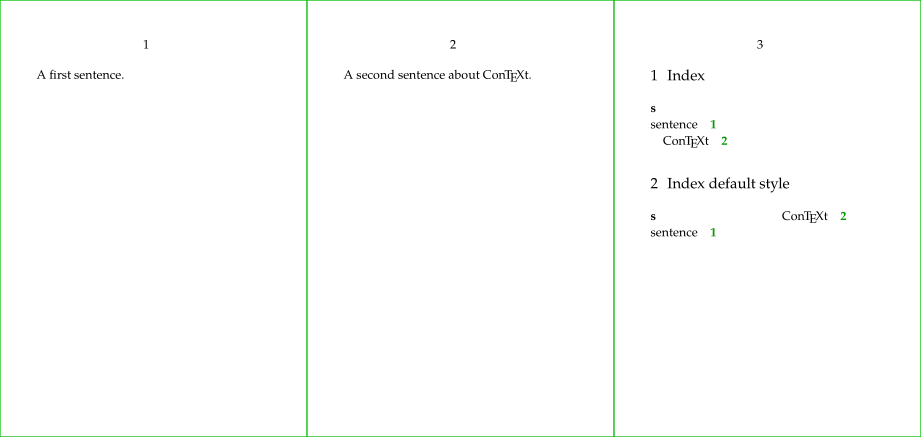
Notes
Footnotes
The \footnote[label]{the note content} command places the text given as an argument as a footnote, and it is possible to indicate a label between square brackets in order to refer to it later with the \note command.
-
\setuppapersize[A8,landscape] \setupinteraction[state=start] \starttext Hello \footnote[MyNote]{this is the text of the footnote the footnote text, enclosed in braces, after the option to indicate the footnote label between brackets} world ! Please see note \note[MyNote] for more details. \stoptext
- 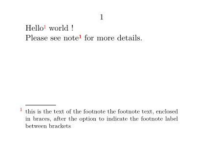
Margin notes
To place note in the margin, use the \inouter{the note content} or the other sisters commands. \setupmargindata is used to configure the typesetting.
-
\setuppapersize[A8,landscape] \setupinteraction[state=start] \setuplayout [width=3cm,rightmargin=3cm] \showframe \setupalign[tolerant] \setupmargindata[outer][style=slanted] \starttext To place note in the margin, use the \tex{inouter} or the\inouter[MyNote]{this is the text of the margin note} other sisters commands \stoptext
- 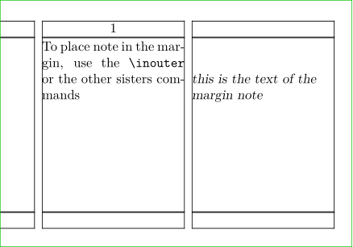
Attachment
The \attachment (or \startattachment) command is used to insert a document as an attachment. Do not forget \setupinteraction[state=start] to make it effective.
2 remarks for this demo: we have to use a buffer to produce the file to be attached, and the rendering contains a glitch that you will not get locally.
Customization is performed with \setupattachment and a \placeattachments is also available.
For example, with location=none, your attachments get collected until \placeattachments.
-
\setuppapersize[A8,landscape] \setupinteraction [state=start] \startbuffer[biblio] @Book{2024MathManual, title = {Mathematics in \ConTeXt}, author = {Hagen, Hans and Sundqvist,Mikael P.}, edition = {1}, year = {2024}, publisher = {pragma-ade, NL}, url = {http://www.pragma-ade.nl/general/manuals/mathincontext-paper.pdf}, } \stopbuffer \savebuffer[biblio,file=biblio.bib,prefix=no] \setupattachments[ color=red, symbol=Pushpin, ] \starttext For example, the file of the bibliography \attachment [file={biblio.bib}] \stoptext
- 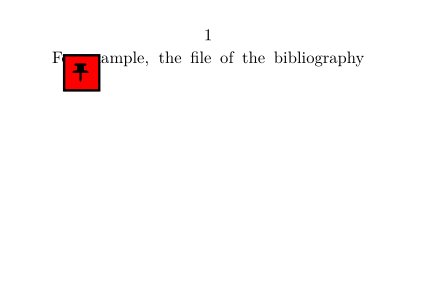
You can link to an attachment if it is a PDF file and that you use its name as prefix:
\attachment[method=hidden, file={other.pdf}] \goto{Click here to open other}[other::]
Synonyms and glossary
First we define a category of synonyms with \definesynonyms and then we can define each term with \abbreviation. Each newly defined term is then available as a command.
-
\setuppapersize[A8,landscape] \definesynonyms [abbreviation] [abbreviations] [\myinfull] \abbreviation {UN} {United Nations} \abbreviation {UK} {United Kingdom} \abbreviation {NL} {Netherlands} \starttext In the \UK, or \myinfull{UK}. In the \UN, or \myinfull{UN}. \startsection[title={Glossary}] \placelistofabbreviations \stopsection \stoptext
- 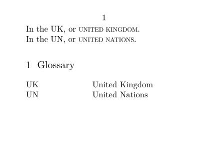
Floats and captions
Floating Objects (floats) are placed (and numbered) automatically with \placefloat (or its sister commands \placefigure, \placetable…). It allows to create floating figures or table with caption.
Floats are placed at an appropriate position determined by the TeX float placement algorithm. The algorithm has a number of options that can influence float placement.
Floats include "figure", "table", and "intermezzo". Additional floats can be defined using \definefloat.
Additionally, you have access to commands like \placelistoffigures, \placelistoftables which creates a list of the "figures" / "tables" / "intermezzos" used in the document.
\placefloat[location][reference]{caption}{the content of the float}
-
locationis one or several (comma separated) option to influence the float placement, see \placefloat -
referenceis the label to use for reference to the float
-
\definepapersize[sheet][width=52mm,height=148mm] \setuppapersize[A8][sheet] \setuppaper[nx=1,ny=2] \setuparranging[XY] \showframe[edge] \setupbodyfont[pagella,8pt] \setupinteraction[state=start] \starttext \startsection[title={Section with cow}] \placefigure [here,force] [fig:myfig] {The caption} {\externalfigure[cow.pdf][width=2cm]} \stopsection \page \startsection[title={Section with references}] Please have a look to \in{figure}[fig:myfig], \at{page}[fig:myfig], whose caption is \about[fig:myfig]. \stopsection \startsection[title={List of figures}] \placelistoffigures[criterium=all] \stopsection \stoptext
- 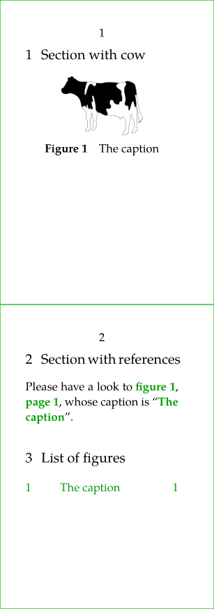
To tweak the numbering scheme, please see Section numbering